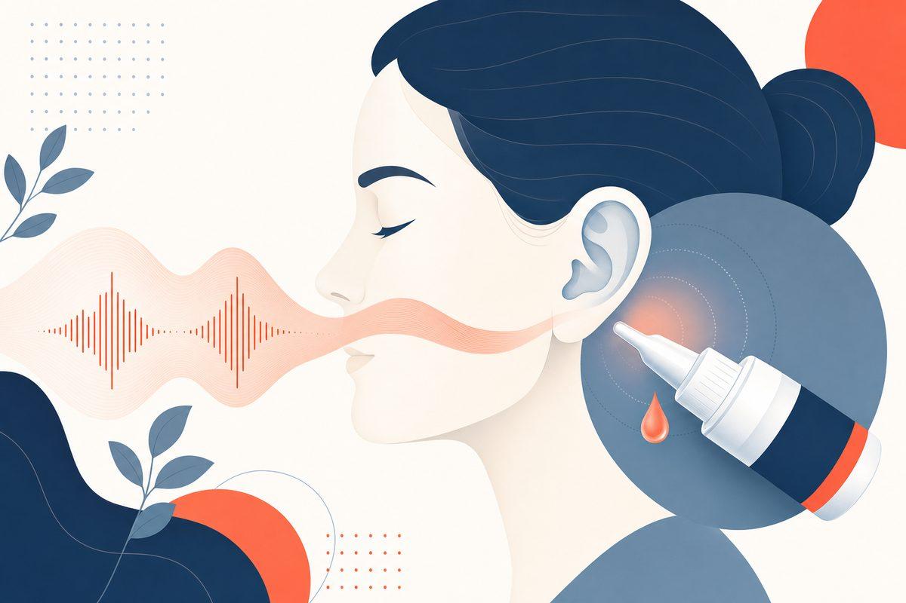

Ear Infections and Swimmer's Ear: 7-Day Drop Guide for Adults
Know which part of the ear hurts, when seven-day drops are appropriate, and when an in-person ear exam matters.

How do you treat swimmer's ear in an adult?
Key Takeaways
- Swimmer’s ear and middle-ear infection involve different anatomy and need different treatment decisions.[1][3]
- For uncomplicated external-canal disease, topical treatment is initial therapy, not routine oral antibiotics.[1][3]
- US labels use seven-day schedules: ofloxacin once daily, ciprofloxacin/dexamethasone twice daily.[5][6]
- A known or suspected eardrum perforation calls for a non-ototoxic drop choice.[1][3]
- Do not use drying drops with tubes, a punctured eardrum, drainage, or active swimmer’s ear.[4]
- No response within 48 to 72 hours needs reassessment of the diagnosis and drop delivery.[1]
- A swollen-shut canal, severe pain, or high-risk conditions requires an in-person pathway.[1][3][9]
For a focused companion discussion of remote assessment, see telehealth ear infections in adults. It does not replace an indicated otoscopic examination.
How do you treat swimmer's ear in an adult?
Which drops are first-line after the ear is examined?
When an examination confirms uncomplicated diffuse acute otitis externa, treatment starts with a suitable topical ear preparation and pain relief. The 2014 American Academy of Otolaryngology–Head and Neck Surgery Foundation (AAO-HNSF) guideline advises topical therapy rather than routine oral antibiotics. Choice depends on the eardrum, allergies, cost, ease of use, and whether the drops can reach the inflamed canal. No single preparation is proven best for everyone.[1][2][3][8]
A clinician should look into the canal and assess the eardrum before assuming pain after swimming is swimmer's ear. If the canal is swollen shut, a clinician may need to place a wick or clear obstructing debris so drops reach the skin. Home irrigation, cotton swabs, or improvised wicks are not substitutes for that examination.[1][3]
For otherwise stable adults with no red flags, supportive care includes keeping the ear dry and taking an appropriate over-the-counter pain medicine according to its label. Reassessment is needed if initial treatment is not working after 48 to 72 hours.[1][3][10]
Swimmer's ear vs. middle ear infection: how can you tell?
Swimmer's ear, or acute otitis externa, involves the skin of the external ear canal. Otitis media develops behind the eardrum. Ear-pulling or pressure on the small flap in front of the canal (the tragus) often worsens canal pain; deep pain after a respiratory infection may point to middle-ear disease. Neither clue proves the diagnosis without examining the canal and eardrum.[1][3][9][10]
Swipe horizontally on a small screen to read every column.
| Pattern | What a clinician checks | Typical approach |
|---|---|---|
| Outer-canal pain, itch, discharge; tenderness on tragus/pinna movement | Canal inflammation, debris, eardrum integrity | Suitable topical preparation and analgesia for uncomplicated disease |
| Deep pain after a cold, possible fever or hearing change | Middle-ear fluid and eardrum findings | Middle-ear diagnosis determines whether observation or an oral medicine is appropriate |
| Referred ear pain with a normal ear exam | Jaw, teeth, throat and surrounding structures | Treat the cause rather than assuming an ear infection |
A video visit may help with triage but cannot reliably determine whether a hidden eardrum is intact or exclude a different ear problem. In-person otoscopy is the appropriate next step if diagnosis or safe choice of drops is uncertain.[1][3][10][11]
What are the symptoms of swimmer's ear?
Typical symptoms are ear-canal pain, itching, fullness, tenderness when moving the outer ear, and sometimes discharge or muffled hearing. A clinician may see canal swelling, redness, or debris. Not everyone recently swam: irritation from cotton swabs, hearing aids, earbuds, eczema, or trapped moisture can damage the canal barrier.[1][3][4][9]
Fever, severe worsening pain, facial weakness, or swelling extending outside the canal is not a routine home-care pattern. People with diabetes or impaired immunity should have a lower threshold for prompt examination if pain is intense or persistent, particularly at night.[1][3][9]
Ofloxacin ear drops vs. Ciprodex: which is used?
Both ofloxacin otic solution and ciprofloxacin/dexamethasone otic suspension are prescription topical options for bacterial acute otitis externa. The steroid-containing product may help canal inflammation, but available comparisons do not prove it is necessary for everyone. Product-label instructions, not another product's label, govern frequency and duration.[1][3][5][6][8]
Swipe horizontally on a small screen to read every column.
| Otic medicine | Age 13+ or adult regimen | Practical detail |
|---|---|---|
| Ofloxacin otic solution 0.3% | 10 drops into the affected ear once daily for 7 days | Label also gives a different twice-daily schedule for a middle-ear indication; do not conflate them |
| Ciprofloxacin 0.3% / dexamethasone 0.1% suspension | 4 drops into the affected ear twice daily for 7 days | Shake the suspension and warm the bottle in the hand before use |
| Acidifying or other topical agents | No single universal regimen | Choice requires an intact eardrum or product-specific safety review; irritation and local reactions matter |
The old version of this guide incorrectly listed ofloxacin once or twice daily for a seven-day swimmer's-ear course and called ciprofloxacin the only drop without ototoxicity risk. The cited ofloxacin label says once daily for patients 13 or older with external-canal infection. The AAO-HNSF guideline requires a non-ototoxic preparation when a perforation is known or suspected; it does not reserve that category to ciprofloxacin alone.[1][5][6]
What if your eardrum is perforated or you have an ear tube?
A hole in the eardrum or a tube can expose the middle ear to medicine intended only for the external canal. If perforation is known or suspected, the AAO-HNSF guideline says to choose a non-ototoxic topical preparation. Ofloxacin and certain ciprofloxacin otic formulations have indications involving a non-intact membrane, but the clinician still needs to identify the condition and check the exact product and label.[1][3][5][6]
Avoid potentially ototoxic preparations such as neomycin-containing drops when eardrum integrity is uncertain. Do not use vinegar, alcohol-based drying drops, or ear irrigation if you have tubes, a punctured eardrum, active drainage, or suspected swimmer's ear. The CDC explicitly advises against drying drops in those situations.[1][3][4]
How do you put ear drops in correctly?
Follow the instructions that came with the dispensed bottle. Wash hands, warm the bottle in your hand for a minute or two if the label directs, and lie with the affected ear up. For adults, gently pull the ear up and back, apply the prescribed number of drops without touching the applicator tip, and keep the ear up long enough for drops to enter the canal.[5][6][10]
The cited ofloxacin label says to remain in position for about five minutes. The ciprofloxacin/dexamethasone label specifies one minute and says to shake the suspension. Their techniques are similar but not identical. If swelling blocks the canal or the liquid immediately runs out, ask for an in-person evaluation instead of inserting swabs or increasing the dose yourself.[1][5][6]
How long does swimmer's ear last?
A seven-day course is the labeled schedule for the two medicines compared above, but symptoms can improve before the course finishes. The AAO-HNSF guideline calls for reassessment within 48 to 72 hours if the initial treatment is not working, to check the diagnosis and drug delivery. That is a safety checkpoint, not a promise of cure by day three.[1][5][6]
An older randomized trial of 213 adults found median symptom duration of six to eight days across the studied topical regimens. Its tested drops were not a direct comparison of ofloxacin versus ciprofloxacin/dexamethasone, and it excluded perforated eardrums. Use that number as context, not an individual forecast. Persistent drainage after a complete course needs another look.[5][6][7]
Do you need oral antibiotics for swimmer's ear?
Not for a straightforward diffuse canal infection. The specialty guideline reserves systemic antibiotics for spread beyond the canal or specific host factors that change care. Inappropriate tablets do not solve the problem of drops failing to penetrate an obstructed canal and can cause adverse effects. The clinician should also consider whether the diagnosis is actually middle-ear disease.[1][3][8]
Diabetes and immunosuppression are reasons for more careful assessment, not automatic permission for a video-only antibiotic course. Spreading redness around the outer ear, systemic illness, or concern for necrotizing external otitis needs in-person evaluation and may require specialist-directed treatment. This guide does not give a regimen for that serious complication.[1][3][9]
Can swimmer's ear go away on its own? Which home remedies are safe?
Do not rely on alcohol, vinegar, peroxide, olive oil, leftover drops, or a cotton swab to treat painful or draining ears. Home approaches cannot show whether the eardrum is intact or whether the infection has spread. Keep water out while symptoms are active, avoid irritating the canal, and arrange examination if pain or drainage persists.[1][3][4][10]
A person with mild itching after water exposure but no diagnosed infection might ask a clinician whether a preventive drying drop is appropriate for future swims. The CDC says not to use drying drops with tubes, a punctured eardrum, active swimmer's ear, or drainage. Advice about prevention must not be recycled as treatment of an active infection.[4]
How do you prevent swimmer's ear and when can you swim again?
Dry the outside of the ears gently after swimming. Tilt the head to let trapped water drain, and avoid scratching the canal or using cotton swabs. Discuss recurring episodes, skin conditions, or ill-fitting hearing aids with a clinician. Do not put an object into the canal to dry it.[3][4]
Avoid swimming while the ear is painful or being treated, unless the treating clinician gives a specific plan. The cited ofloxacin label tells patients to avoid swimming unless the physician instructs otherwise. There is no universally safe “return on day three” rule: return when symptoms have resolved and the clinician's instructions permit it.[4][5][10]
Is swimmer's ear contagious?
Acute otitis externa is inflammation or infection of an individual's ear canal, often after moisture or skin irritation. It is not normally handled like a respiratory infection passed between swimmers. Shared water exposure can create similar conditions for several people, but it does not establish person-to-person spread of one patient's canal infection. If you have discharge, do not share items used in your ear and obtain an examination.[1][3][4]
What has changed in the evidence since the 2014 guideline?
The named US specialty guideline is the 2014 AAO-HNSF acute otitis externa guideline, not an “IDSA 2014 otitis externa guideline.” It remains the source for topical-first therapy, non-ototoxic drops with non-intact membranes, and 48–72-hour reassessment. A 2023 AAFP review echoes the approach and cautions that no one preparation is proven clinically superior for everyone.[1][2][3]
A 2010 Cochrane review included 19 randomized trials with 3,382 participants, but many comparisons relied on small studies and only two were based in primary care. An older adult trial suggests acetic acid alone may perform worse later in the course than studied steroid-containing treatments. Neither finding proves that every patient needs the most expensive combination drop.[7][8]
More recent observational imaging research exists, but it does not revise first-line otic-drug selection or justify treating an asymptomatic scan alone. This 2026 refresh corrects inaccurate old dosing and distinguishes adult urgent-care decisions from pediatric middle-ear protocols.[1][3]
When does ear pain require urgent in-person or emergency care?
Seek prompt in-person assessment if the canal is swollen shut, drops cannot enter, drainage is persistent, there is redness spreading beyond the ear, or you have diabetes or immune suppression with intense or worsening pain. A wick or canal cleaning must be performed by a trained clinician, and severe persistent pain may indicate a different or invasive process.[1][3][9]
Seek emergency care for facial weakness, confusion, severe headache or stiff neck, rapid worsening with systemic illness, sudden major hearing loss, or swelling and tenderness behind the ear. Postauricular swelling can signal a middle-ear complication such as mastoiditis, not just uncomplicated swimmer's ear.[3][9][10]
Swipe horizontally on a small screen to read every column.
| Pattern | Next step | Why |
|---|---|---|
| Mild symptoms without red flags, stable adult | Clinician assessment; in-person otoscopy when diagnosis or eardrum is unclear | Safe drops depend on the canal and membrane |
| Canal blocked, treatment failure, severe pain, diabetes or immunosuppression | Prompt in-person examination; specialist if indicated | May need wick, different diagnosis, or invasive infection workup |
| Facial weakness, postauricular swelling, neurologic symptoms, severe systemic illness | Emergency assessment | Possible serious complication outside routine virtual care |
Can a video visit diagnose swimmer's ear or prescribe drops?
TeleDirectMD lists adult ear-pain care for short-term assessment. A video visit can review the timeline, ear tenderness, discharge, water exposure, medicine allergies, and safety warning signs. If a clinician can make a sufficiently safe assessment, treatment may be considered. But a standard video camera cannot reliably inspect a swollen canal or confirm eardrum integrity.[11]
An in-person clinician with an otoscope is the alternative path when the diagnosis, eardrum status, or drug delivery is uncertain. Any need for a wick, cleaning, culture, drainage, imaging, or specialist review requires appropriate in-person care. This guide is for adults and does not turn pediatric ear-infection recommendations into a TeleDirectMD service.[1][3][11]
Frequently Asked Questions
The cited US otic label says ten drops in the affected ear once daily for seven days for patients 13 and older. Do not confuse it with the twice-daily schedule for a different middle-ear indication.[5]
Its cited US label specifies four drops in the affected ear twice daily for seven days. Shake the bottle and follow its administration directions.[6]
Do not use homemade or ear-drying drops to treat active swimmer’s ear. CDC advises avoiding drying drops with ear tubes, a punctured eardrum, active swimmer’s ear, or drainage.[4]
References
- Rosenfeld RM, Schwartz SR, Cannon CR, et al. Clinical practice guideline: acute otitis externa. Otolaryngology--head and neck surgery : official journal of American Academy of Otolaryngology-Head and Neck Surgery. 2014;150(1 Suppl):S1-S24. https://pubmed.ncbi.nlm.nih.gov/24491310/
- American Academy of Otolaryngology–Head and Neck Surgery. Clinical Practice Guideline: Acute Otitis Externa (Update). February 2014. Accessed October 8, 2026. https://www.entnet.org/quality-practice/quality-products/clinical-practice-guidelines/aoe/
- Jackson EA, Geer K. Acute Otitis Externa: Rapid Evidence Review. American family physician. 2023;107(2):145-151. https://pubmed.ncbi.nlm.nih.gov/36791445/
- CDC. Preventing Swimmer’s Ear. May 28, 2025. https://www.cdc.gov/healthy-swimming/prevention/preventing-swimmers-ear.html
- DailyMed. Ofloxacin otic solution 0.3%, prescribing information; otitis externa regimen. Accessed October 8, 2026. https://dailymed.nlm.nih.gov/dailymed/lookup.cfm?setid=14e6e355-3a87-43dc-80a2-070b9df93bf1
- DailyMed. Ciprofloxacin 0.3% and dexamethasone 0.1% otic suspension, prescribing information. Revised April 2026. https://dailymed.nlm.nih.gov/dailymed/fda/fdaDrugXsl.cfm?setid=355fa56f-d7a8-444e-9dec-8ba1fa4ab0d8&type=display
- van Balen FA, Smit WM, Zuithoff NP, et al. Clinical efficacy of three common treatments in acute otitis externa in primary care: randomised controlled trial. BMJ (Clinical research ed.). 2003;327(7425):1201-5. https://pubmed.ncbi.nlm.nih.gov/14630756/
- Kaushik V, Malik T, Saeed SR. Interventions for acute otitis externa. The Cochrane database of systematic reviews. 2010;2010(1):CD004740. https://pubmed.ncbi.nlm.nih.gov/20091565/
- Barry V, Bhamra N, Balai E, et al. Otitis externa. BMJ (Clinical research ed.). 2021;372:n714. https://pubmed.ncbi.nlm.nih.gov/33789841/
- National Health Service. Ear infections. Accessed October 8, 2026; UK patient instructions, interpreted alongside US labeling. https://www.nhs.uk/conditions/ear-infections/
- TeleDirectMD. Ear Pain Online Treatment. Accessed October 8, 2026; service scope, not clinical evidence. https://teledirectmd.com/ear-pain-treatment-online/
Sources checked October 8, 2026. The AAO-HNSF guideline was published in 2014; no new IDSA otitis externa guideline was found. A relevant imaging study was read via EBSCOhost but is not used to support first-line treatment.
This health guides library is published for educational purposes only. It does not constitute medical advice and is not a substitute for evaluation by a licensed clinician. Always consult a qualified healthcare provider about any medical concern. All articles are reviewed by Parth Bhavsar, MD, and cite peer-reviewed sources where possible.